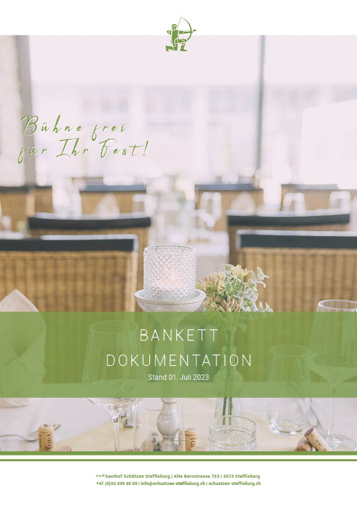

Print · Editorial Design · 2024
Bühne frei für
das Fest!
Der Schützen Steffisburg gehört unter dasselbe Dach wie die Krone
Thun. Da das Haus keine eigene Marketingabteilung hat, unterstützt
das Krone-Marketingteam bei verschiedenen Projekten.
Ich durfte ein neues Layout für die Bankettdokumentation
gestalten. Ziel war eine übersichtliche und moderne Grundlage, die
vom Schützen anschliessend selbstständig weiterbearbeitet und für
unterschiedliche Veranstaltungen eingesetzt werden kann.

Ergebnis